Discrete Response Data
Day 1
Note that this lecture is based on Chapters 3-4 of Bayes Rules! book.
The Beta Prior Distribution
Back to Graduate School Applications
We have been trying to understand \(\pi\), the acceptance rate of a graduate program in a specific department. Let’s make a fresh start to the same problem, expanding beyond three possibilities for \(\pi\). Now we will let \(\pi \in [0,1]\).
Continuous Probability Models
Let \(\pi\) be a continuous random variable with pdf \(f(\pi)\). Then \(f(\pi)\) has the following properties:
- \(\int_\pi f(\pi)d\pi = 1\), ie. the area under \(f(\pi)\) is 1
- \(f(\pi) \ge 0\)
- \(P(a < \pi < b) = \int_a^b f(\pi) d\pi\) when \(a \le b\)
Interpreting \(f(\pi)\):
\(f(\pi)\) can be used to compare the plausibility of two different values of \(\pi\).
Plotting the Continuous Prior
For each of the following students’ prior ideas for \(\pi\), we plot the pdf of a prior.
Bahar thinks that it is extremely difficult to get into this program.
Vish thinks that it is difficult to get into this program.
Gabriela does not have any strong opinions whether it is difficult or easy to get into this program.
Wei thinks that it is easy to get into this program.
Beyoncé thinks that it is extremely easy to get into this program.
Bahar’s prior
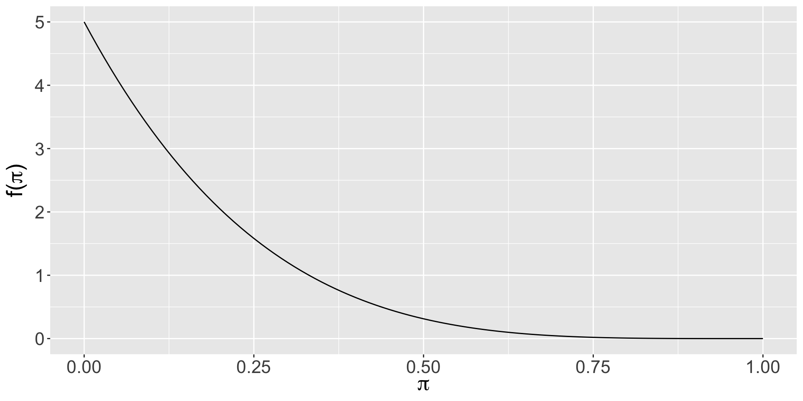Vish’s prior
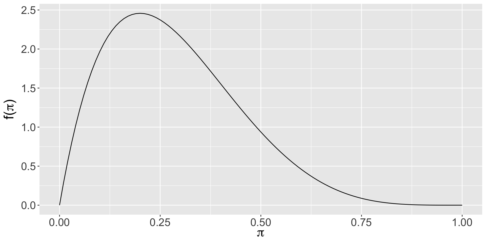Gabriela’s prior
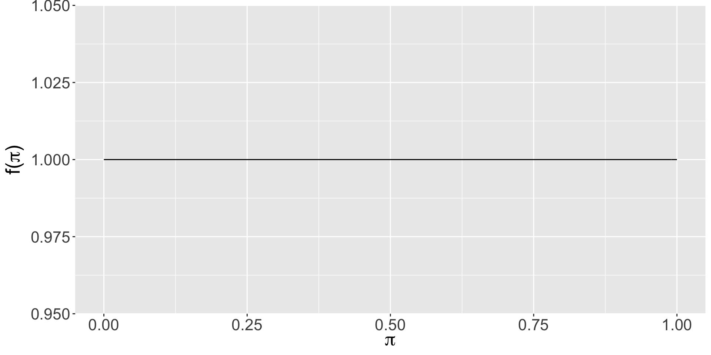Wei’s prior
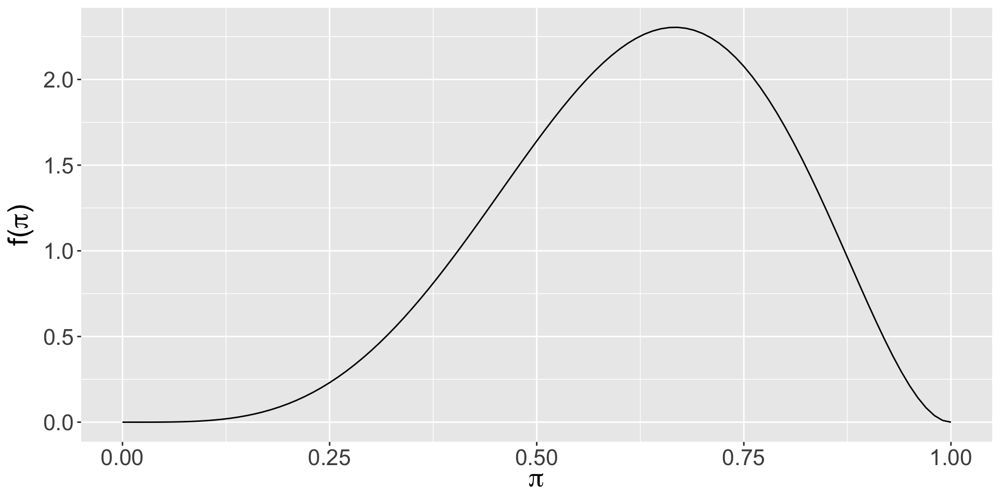Beyoncé’s prior
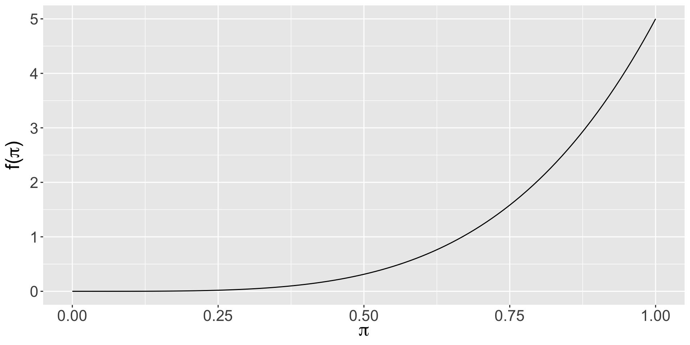Beta Prior Model
Let \(\pi\) be a random variable which can take any value between 0 and 1, ie. \(\pi \in [0,1]\). Then the variability in \(\pi\) might be well modeled by a Beta model with shape parameters \(\alpha > 0\) and \(\beta > 0\):
\[\pi \sim \text{Beta}(\alpha, \beta)\] The Beta model is specified by continuous pdf \[\begin{equation} f(\pi) = \frac{\Gamma(\alpha + \beta)}{\Gamma(\alpha)\Gamma(\beta)} \pi^{\alpha-1} (1-\pi)^{\beta-1} \;\; \text{ for } \pi \in [0,1] \end{equation}\] where \(\Gamma(z) = \int_0^\infty y^{z-1}e^{-y}dy\) and \(\Gamma(z + 1) = z \Gamma(z)\). Fun fact: when \(z\) is a positive integer, then \(\Gamma(z)\) simplifies to \(\Gamma(z) = (z-1)!\)
Beta Prior Model
\(\pi \sim \text{Beta}(3, 8)\)
\(f(\pi) = \frac{\Gamma(\alpha + \beta)}{\Gamma(\alpha)\Gamma(\beta)} \pi^{\alpha-1} (1-\pi)^{\beta-1}\)
\(f(\pi) = \frac{\Gamma(3 + 11)}{\Gamma(3)\Gamma(8)} 0.5^{3-1} (1-0.5)^{8-1}\)
\(f(\pi) = \frac{13!}{2!7!} 0.5^{3-1} (1-0.5)^{8-1}\)
\(f(\pi) = 0.703125\)
Beta Prior Model
\(\pi \sim \text{Beta}(3, 8)\)
Plotting the Beta Prior
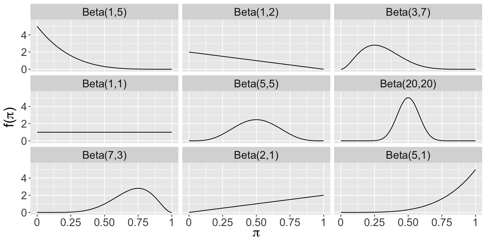Plotting the Beta Prior with bayesrules package
Use the plot_beta() function in the bayesrules package to try different shape parameters. Example:
Beta Descriptives
\[E(\pi) = \frac{\alpha}{\alpha + \beta}\]
\[\text{Mode}(\pi) = \frac{\alpha - 1}{\alpha + \beta - 2}\]
\[\text{Var}(\pi) = \frac{\alpha \beta}{(\alpha + \beta)^2(\alpha + \beta + 1)}\]
Beta Descriptives with bayesrules package
Use the summarize_beta() function in the bayesrules package to find the mean, mode, and variance of various Beta distributions. Example:
The Beta-Binomial Model
Graduate Admissions
An applicant to a small graduate program wants to know \(\pi\), the probability of admission, so they can determine how many programs to which they should apply. Based on commentary on The GradCafe about similar programs, the applicant thinks that \(\pi\) is likely to be in the range of 0.05 to 0.25.
Plotting the Prior
Discussion question
Is this a reasonable prior choice?
Summarizing the Prior
Binomial Distribution
The binomial distribution is used to obtain the probability of \(Y=y\) “successes” from a fixed number of \(n\) independent Bernoulli trials.
A Bernoulli trial has two possible outcomes:
one with probability (called the probability of success) \(\pi\), and
the other with probability (called the probability of failure) \(1-\pi\).
The distribution is \(P(Y=y)={n \choose y}\pi^y(1-\pi)^{n-y}\) and has mean \(n\pi\) and variance \(n\pi(1-\pi)\).
Posterior for the Beta-Binomial Model
Let \(\pi \sim \text{Beta}(\alpha, \beta)\) and \(Y|n \sim \text{Bin}(n,\pi)\).
\(f(\pi|y) \propto \frac{\Gamma(\alpha+\beta)}{\Gamma(\alpha)\Gamma(\beta)}\pi^{\alpha-1} (1-\pi)^{\beta-1} {n \choose y}\pi^y(1-\pi)^{n-y}\)
\(f(\pi|y) \propto \pi^{(\alpha+y)-1} (1-\pi)^{(\beta+n-y)-1}\)
\(\pi|y \sim \text{Beta}(\alpha +y, \beta+n-y)\)
\(f(\pi|y) = \frac{\Gamma(\alpha+\beta+n)}{\Gamma(\alpha+y)\Gamma(\beta+n-y)} \pi^{(\alpha+y)-1} (1-\pi)^{(\beta+n-y)-1}\)
Conjugate Prior
We say that \(f(\pi)\) is a conjugate prior for \(L(\pi|y)\) if the posterior, \(f(\pi|y) \propto f(\pi)L(\pi|y)\), is from the same model family as the prior.
Thus, the Beta distribution is a conjugate prior for the Binomial likelihood model because the posterior also follows a Beta distribution.
Note that in the likelihood, \(\pi\) is raised to the power of the number of successes, and \(1-\pi\) is raised to the power of the number of failures. The prior has a similar structure, and \(\alpha\) is often interpreted as the approximate prior number of successes, and \(\beta\) is often interpreted as the approximate prior number of failures, with \(\alpha+\beta\) as the approximate prior sample size.
Graduate Program Admissions
The applicant decides to collect some data on social media and identifies 50 people who applied to the program and asks them whether they were accepted or not. It turns out that 25 of them were! What is the posterior distribution of \(\pi\) after having observed this data?
\(\pi|y \sim \text{Beta}(\alpha +y, \beta+n-y)\)
\(\pi|y \sim \text{Beta}(5 +25, 35+50-25)\)
\(\pi|y \sim \text{Beta}(30, 60)\)
Plotting the Posterior
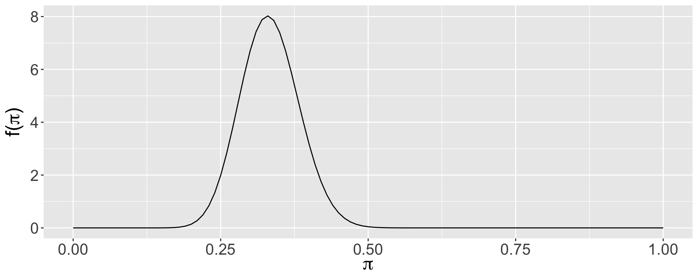Summarizing the Posterior
mean mode var sd
1 0.3333333 0.3295455 0.002442002 0.04941662Plot Summary
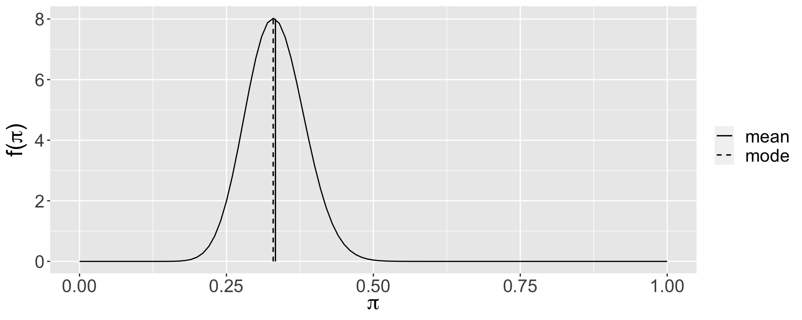Balancing Act
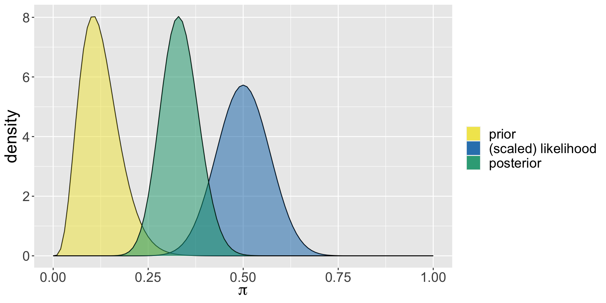Posterior Descriptives
\(\pi|(Y=y) \sim \text{Beta}(\alpha+y, \beta+n-y)\)
\[E(\pi | (Y=y)) = \frac{\alpha + y}{\alpha + \beta + n}\] \[\text{Mode}(\pi | (Y=y)) = \frac{\alpha + y - 1}{\alpha + \beta + n - 2} \] \[\text{Var}(\pi | (Y=y)) = \frac{(\alpha + y)(\beta + n - y)}{(\alpha + \beta + n)^2(\alpha + \beta + n + 1)}\\\]
Descriptives of the Posterior
What are the descriptive measures (expected value, mode, and variance) of the posterior distribution for the admissions example?
model alpha beta mean mode var sd
1 prior 5 35 0.1250000 0.1052632 0.002667683 0.05164962
2 posterior 30 60 0.3333333 0.3295455 0.002442002 0.04941662Balance in Bayesian Analysis
Bechdel Test
(Example from bayesrulesbook.com)
Alison Bechdel’s 1985 comic Dykes to Watch Out For has a strip called The Rule, in which a person states that they only go to a movie if it satisfies the following three rules:
- the movie has to have at least two women in it;
- these two women talk to each other; and
- they talk about something besides a man.
This test is now used for assessing movies in terms of representation of women. Even though there are three criteria, a movie either fails (does not satisfy one or more criteria) or passes (satisfies all three criteria) the Bechdel test.
Different Priors, Different Posteriors
Let \(\pi\) be the the proportion of movies that pass the Bechdel test.
The table shows three different people with three different priors about \(\pi\).
| Optimist | Clueless | Pessimist |
|---|---|---|
| Beta(14,1) | Beta(1,1) | Beta(5,11) |
Next we plot their priors.
Priors
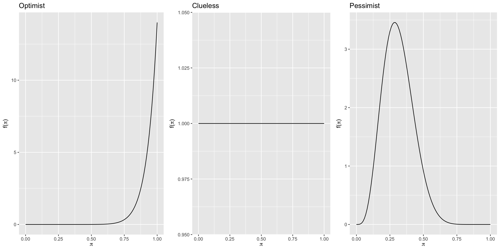Vocabulary
Informative prior: An informative prior reflects specific information about the unknown variable with high certainty (ie. low variability).
Vague (diffuse) prior: A vague or diffuse prior reflects little specific information about the unknown variable. A flat prior, which assigns equal prior plausibility to all possible values of the variable, is a special case.
Data
library(bayesrules)has thebechdeldata frame. Randomly select 20 movies from this dataset (seed = 84735) to be our dataBased on the observed data, we will update the posterior for all three people
We calculate the summary statistics for the prior and the posterior for all three
We plot the prior, likelihood, and the posterior for all three
We explain the effect of different priors on the posterior
The Optimist
model alpha beta mean mode var sd
1 prior 14 1 0.9333333 1.0000000 0.003888889 0.06236096
2 posterior 23 12 0.6571429 0.6666667 0.006258503 0.07911070The Optimist
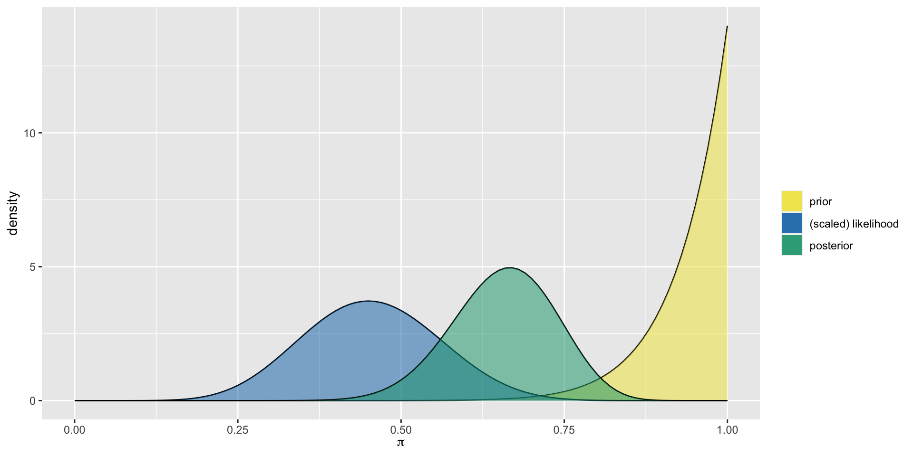The Clueless
model alpha beta mean mode var sd
1 prior 1 1 0.5000000 NaN 0.08333333 0.2886751
2 posterior 10 12 0.4545455 0.45 0.01077973 0.1038255The Clueless
The Pessimist
model alpha beta mean mode var sd
1 prior 5 11 0.3125000 0.2857143 0.01263787 0.11241827
2 posterior 14 22 0.3888889 0.3823529 0.00642309 0.08014418The Pessimist
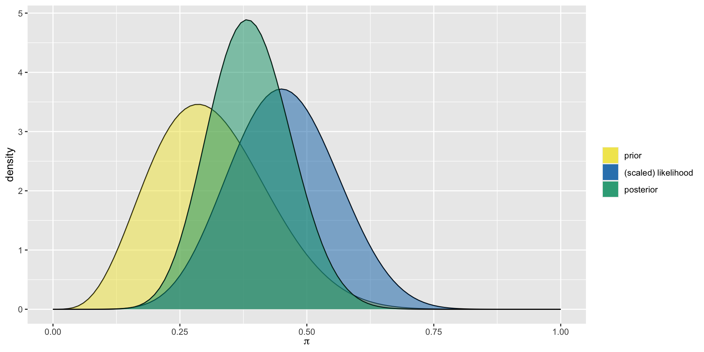Comparison
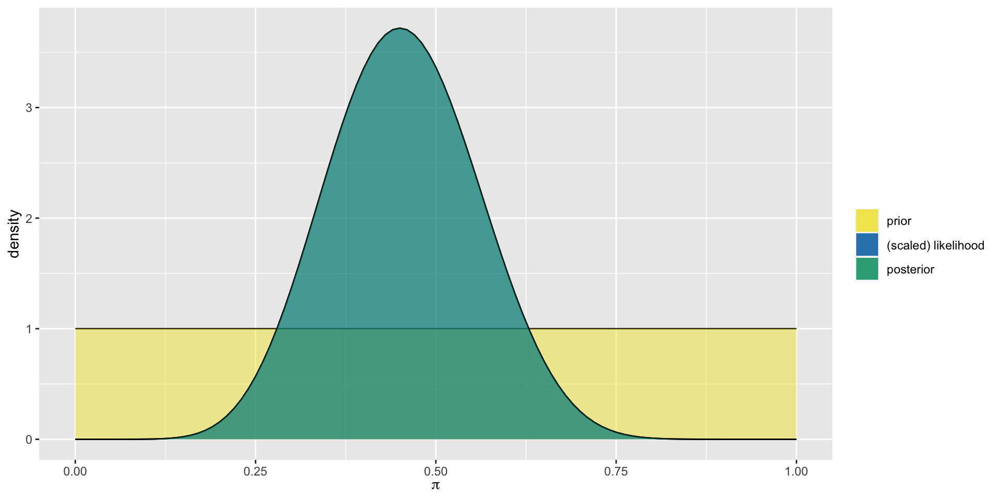Different Data, Different Posteriors
Oksana, Omari, and Orlando all share the optimistic Beta(14,1) prior for \(\pi\) but each have access to different data. Oksana reviews movies from 1991. Omari reviews movies from 2000, and Orlando reviews movies from 2013. How will the posterior distribution for each differ?
Oksana’s Data
Oksana’s Analysis
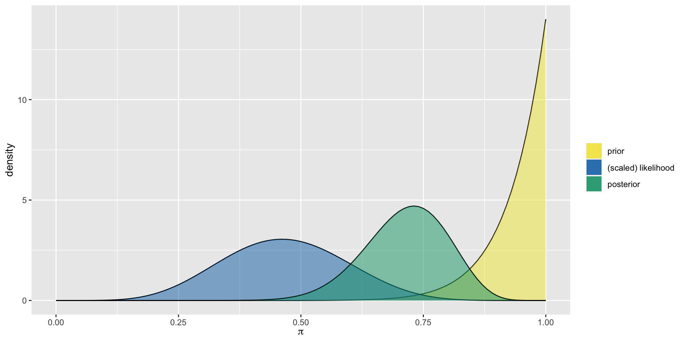Omari’s Data
Omari’s Analysis
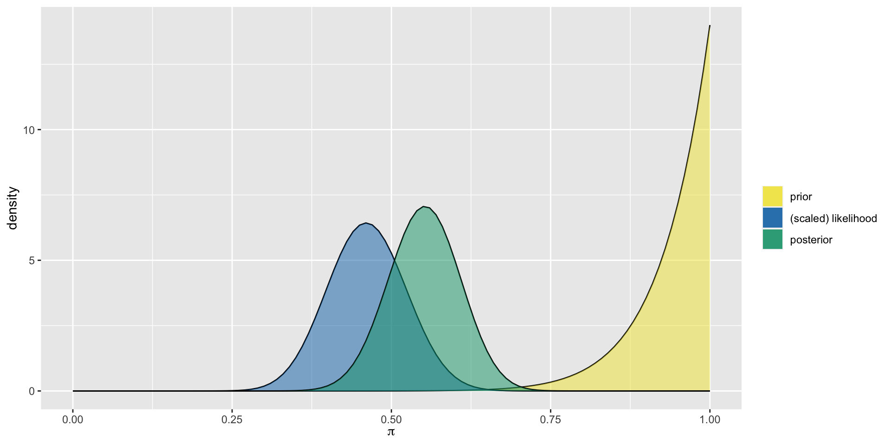Orlando’s Data
Orlando’s Analysis

Summary

Sequential Updating
Sequential Analysis
In a sequential Bayesian analysis, a posterior model is updated incrementally as more data comes in. With the introduction of each new piece of data, the previous posterior model reflecting our understanding prior to observing this data becomes the new prior model.
Time Travel to the End of 1970
Suppose our prior a movie passes the Bechdel test is an optimistic \(\pi \sim Beta(14,1)\). Now let’s look at the 1970 movies.
The Posterior
At the End of 1971
Our posterior at the end of 1970 becomes our new 1971 prior, incorporating the 1970 data, given by \(\pi \sim Beta(15,1)\)
Let’s look at the 1971 movies that have been rated.
The Posterior
At the End of 1972
New prior incorporating 1971 data: \(\pi \sim Beta(15,6)\)
The Posterior
Summary
| Time | Data | Model |
|---|---|---|
| before the analysis | NA | Beta(14,1) |
| at the end of 1970 | Y = 1, n = 1 | Beta(15,1) |
| at the end of 1971 | Y = 0, n = 5 | Beta(15, 6) |
| at the end of 1972 | Y = 1, n = 3 | Beta(16,8) |
Data Order Invariance
| Time | Data | Model |
|---|---|---|
| before the analysis | NA | Beta(14,1) |
| 1972 | Y = 1, n = 3 | Beta(15,3) |
| 1971 | Y = 0, n = 5 | Beta(15,8) |
| 1970 | Y = 1, n = 1 | Beta(16,8) |
As long as we include the same 3 years, our final conclusion is the same!
What If We Observe All the Data at Once?
| Time | Data | Model |
|---|---|---|
| before the analysis | NA | Beta(14,1) |
| 1970 | Y = 1, n = 1 | |
| 1971 | Y = 0, n = 5 | |
| 1972 | Y = 1, n = 3 | |
| Total | Y = 2, n = 9 |
model alpha beta mean mode var sd
1 prior 14 1 0.9333333 1.0000000 0.003888889 0.06236096
2 posterior 16 8 0.6666667 0.6818182 0.008888889 0.09428090Sequential Updating
Let \(\theta\) be any parameter of interest with prior pdf \(f(\theta)\). Then a sequential analysis in which we first observe a data point \(y_1\) and then a second data point \(y_2\) will produce the same posterior model of \(\theta\) as if we first observed \(y_2\) and then \(y_1\):
\[f(\theta | y_1,y_2) = f(\theta|y_2,y_1)\;.\]
Similarly, the posterior model is invariant to whether we observe the data all at once or sequentially.